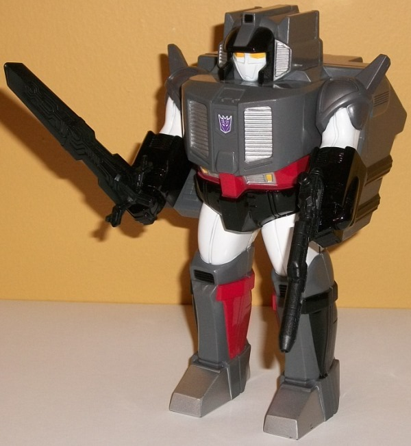
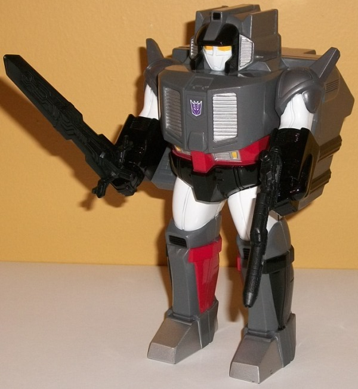
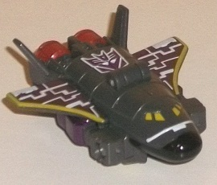
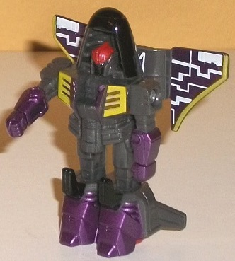
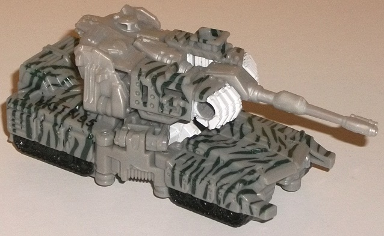
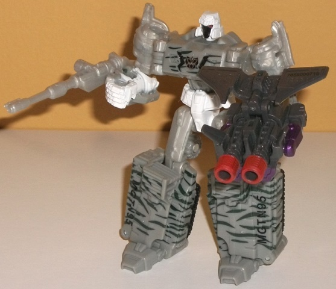

Size : Between Voyager and Ultra (in terms of size/mass) (comes packed with Pretender Optimus Prime w/ Hi-Q )
Color Scheme : Moderately dark gray, black, and some white, silver, orangish "cheesy" yellow, and red
Individual Rating : 5.8
Allegiances
: Decepticon
 Megatron
(Pretender Shell)
Megatron
(Pretender Shell)

Size
: Between Voyager and Ultra
(in terms of size/mass) (comes packed with
Pretender
Optimus Prime w/ Hi-Q
)
Color Scheme
: Moderately dark gray,
black, and some white, silver, orangish "cheesy" yellow, and red
Individual Rating
: 5.8
Although Double Pretender Optimus
Prime had an existing original Pretender shell in the form of
BotCon
2015 exclusive Oilmaster
to get repainted from, having both Prime AND
Megatron use the same Pretender shell would be a bit much-- so instead,
FunPub was able to secure the rare G1 Grand Maximus Pretender shell-- previously
released only in Japan back in the day! Of course, because it was originally
released back then, it's more like your typical G1 Pretender shell in that
it's a more literal shell that splits in half roughly down the middle,
with the plastic thinner than on Oilmaster/Optimus. It's still pretty solid,
though. The mold detailing is pretty typical for G1, in that it's okay,
but not great. It looks like a faceplated robot with fleshy upper legs
and arms and a HUGE backpack-- necessary because originally it was supposed
to fit Grand Maximus' head inside, so he's got a large diagonal chunk of
plastic stretching out waaay behind his back. I'm not gonna lie, it's a
bit of an eyesore-- just look at this toy from a mostly frontal view. A
lot of his mold details are basically just streeeeeettttchhhed out along
the sides, which does not look that great either. The proportions for the
core robot are generally chunky, and honestly not all that "Megatron-y",
but the fact that FunPub was able to actually dig up this mold was still
darned impressive. For weapons, the shell has black versions of the gun
that comes Titans Return
Sentinel Prime
and
the sword that comes with Titans Return voyager Optimus Prime-- both fit
into the shell's hands solidly, so no issues there. The colors are pretty
closely based off of Megatron, obviously, with a moderately dark gray being
the main color. There's also a fair amount of black (most of it of the
glossy variety) on the sides of the lower legs, the lower arms, the waist,
the area around the face, and stripes down the sides. The white and the
red are what help make the color scheme interesting, though. The white
on the upper legs and arms really looks quite nice, being such a "pure"
shade against darker colors. The red on the stomach, lower legs, and a
few details on the back help give the toy a bit of color so Megs isn't
so monochromatic, and it works nicely. There's also silver on the "grill"
details on the chest and sides of the head, as well as on the feet. Finally,
to give that last little bit of G1 Megatron coloration, he's got yellowish-orange
on the eyes and some minor details on the stomach. So again, basically
G1 Megatron's color scheme applied to this mold about as closely as you
can reasonably expect. It's not exactly amazing, but it's not bad, either.
As is usual with G1 Pretender shells, it can move back-and-forth at the
shoulders, but that's it as far as articulation goes. As for how the smaller
robots fit in-- there's a small connection piece made just for this set
(discussed later) that helps connect the inner Megatron toy in robot mode
and Spacewarp together. It's a bit tricky, since this shell wasn't made
to fit these two toys inside-- it may take a little time to figure out
just how to get them in there, but once they're in there it stays closed.
(I found one of the easiest ways was to get the inner Megatron to essentially
do the splits and then fold his lower legs up, that seems to work best
for mine.)
(NOTE: Because the following two toys are
repaints, the rest of this is not a full-blown review. This mainly covers
any changes made to the two and their color schemes, and merely compares
them to the original versions of these molds. For a review on "Thrilling
30th" Payload-- the mold used for Spacewarp-- go
here
.
For a review on "Thrilling 30th" Legends Megatron-- the mold used for Megatron's
inner robot-- go
here
.)
 Spacewarp
Spacewarp


Difficulty of Transformations
: Very
Easy
Color Scheme
: Moderately dark gray,
metallic purple, and some white, red, black, light pale greenish yellow
Individual Rating
: 6.2
Spacewarp is a cancelled
Universe
1.0
exclusive that eventually saw a modified release as one of the
first club exclusives,
Astrotrain
. This
is a tiny little version of that color scheme applied to a toy that...
I really didn't even make the connection before, but it really does look
a LOT like
Armada Jetfire
. Her main color is
a fairly dark gray, but she is practically COVERED in paint-- the unique
metallic purple-with-uneven-lines paint apps are reproduced pretty darned
well on her wings, along with a yellowish green on the edges of the wings
and on the windows and robot chest, too. There's also a (relatively) big
honkin' metallic purple Decepticon symbol on her vehicle mode, and metallic
purple on her chest and lower arms and legs, too. I particularly love this
metallic purple-- it's just a such a lovely color, and obviously very Decepticon-y.
It also goes oddly well with the greenish-yellow, a color which I'd actively
dislike were it used in greater amounts. She also has a bit of black on
her nosecone, knees, and faceplate, and some red on her thrusters and her
helmet. Folks, for a figure this tiny, this is just an OBSCENE amount of
paint-- FunPub really spoiled their fans with this one.
No mold changes have
been made to Spacewarp.
 Megatron
(Inner Robot)
Megatron
(Inner Robot)


Difficulty of Transformation
: Easy
Color Scheme
: Light milky gray,
light gray, and some black, glossy white, red, and metallic dark jungle
green
Individual Rating
: 7.9
Megatron's inner robot
has his color scheme based off of the cancelled G2 "Combat Hero" Megatron.
That is, like with many Megatrons, he's mostly gray-- unfortunately that
means a blah light milky gray used for much of unpaintable plastic parts,
like his upper arms and legs, as well as his turret-gun. Although it's
not metallic, thankfully there's a more "normal-looking", flat gray plastic
used for pretty much every other part. In robot mode there's some white
on his lower arms, pelvis, and around his helmet. There's also some black
in expected places like the treads, as well as a little on his chest and,
oddly enough, his face. Combining this with the red eyes and the white
helmet REALLY makes his head look unique, and is the highlight of this
redeco in my opinion-- you can immediately differentiate him from all the
other Megatrons out there. Still, head aside it's a pretty dull color scheme.
Or rather, it WOULD be without the usual ridiculous G2 camo-- in this case,
a dark jungle green across his tank body (in tiger stripes, of course).
It's a nice metallic shade of the color, and the paint apps basically cover
his entire tank mode, so you can hardly say he's lacking paint apps. I
wish the green was just a LITTLE lighter so it popped a bit more, but it
still looks quite good and definitely keeps this toy from looking boring.
On the sides of the tank mode/lower legs are "MGTN95", obviously referring
to his name and then the fact that the original "Combat Hero" toy was meant
to come out in 1995.
No mold changes have
been made to the core Megatron toy, but he does have an additional accessory--
a connection piece for Megatron and Spacewarp to fit them both inside the
Pretender shell. There's two cylinders on the sides that fit snugly around
Megatron's chest plate, with two little pegs that slot into Spacewarp's
back... noticeably less snugly. Yep, Spacewarp can fall off of it rather
easily when trying to cram them both in there, but getting Megatron to
fit in the shell is the bigger issue, so this is a minor complaint. A bigger
issue with his accessory is that there's no 5mm port for Megatron to hold
it properly, which-- given how much it looks like a gun-- was definitely
a missed opportunity.
Double Pretender Megatron
is certainly the most ambitious of the TFSS 5.0 figures. Getting a rare
Japanese mold as the Pretender shell, molding a new connector piece for
two OTHER different molds, and then finding a way to fit them in there
while making both homages to cancelled exclusives with quite a few paint
apps? FunPub had some cojones when coming up with this one. That said,
in spite of all the paint apps, all the effort made, all the brilliance
of making Payload into Spacewarp... the molds themselves range from borderline
bad (the Pretender shell) to only moderately good (Megatron's inner robot).
So keep that in mind if you're looking for this piece-- but FunPub did
almost as much with this as you could possibly expect.
Reviews by Beastbot